@jeannehunneyball
Playtesting links!
read more
Do you want to help me out with playtesting?
Check out these links!
You can give me feedback here:
Let me know what y'all think!
Do you want to help me out with playtesting?
Check out these links!
You can give me feedback here:
Let me know what y'all think!
After a nice holiday break, I caught Sion up with my progress on my refined twine prototypes and my second iteration of my fishing mini-game.
He assured me it's absolutely fine to be starting my new versions from scratch, as I may be adding mechanics or cutting features, and starting over in a clean file can help prevent issues that come with spaghetti code.
I am also finding even though I may restart a prototype, with every iteration I am finding myself becoming faster and more proficient because I am familiarising myself with good python practices, rather than trying to hack an outdated method I implemented back when my variables and mechanics were different.
I will continue to work on my fishing game first, and look at getting just one full route ready for the end of the week.
I've been really struggling to find any sort of decent visual novel background assets to use in my game.
I've been pondering on making my own backgrounds by taking photographs of local beach towns (aberystwyth comes to my mind~)
I have a canon sure shot 120 classic 35mm point and shoot, a halina flashmatic stb tele 110 toy camera, and a zeiss ikon contessamatic e 35mm rangefinder camera.
I'm hoping with some experimentation, some practice, and some gorgeous locations, i could get some creative background for my game whilst flexing my old photography muscles (that haven't stretched since 2011 haha!)
This week, I have been refining my initial prototype in Twine to define situations and choices that will be relevant to each characters narrative arc. I have screencapped my progress below:
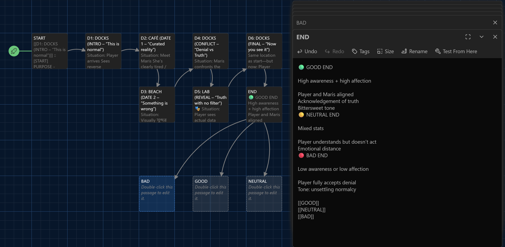
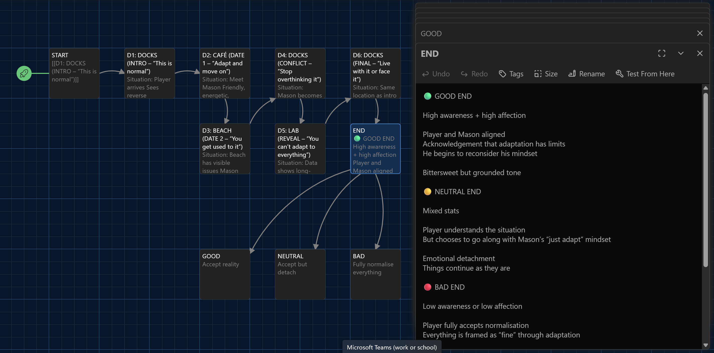
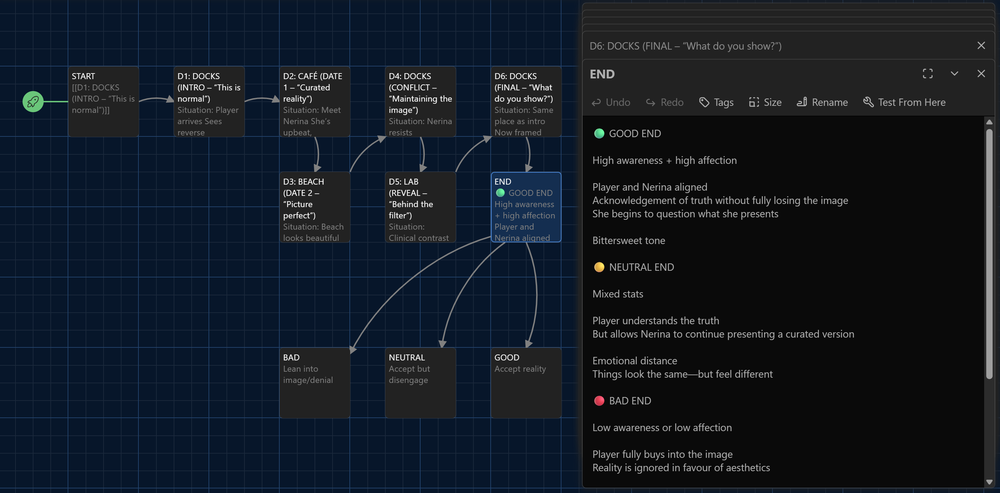
I'll continue to develop and iterate on this structure to add more depth and discomfort for my narrative choices.
As I haven't heard back from Chandra, and would like to have a backup plan for if I can't get a musician to conduct my music, I have managed to snag myself a Stylophone, as well as claimed a bunch of percussive musical instruments from my parents house
They include a cuban guiro, mexican maracas, a balkan dvojnice, a tibetan singing bowl, a (not intentially) headless tambourine, a pocket pal harmonica, an unbranded melodica AND two ocarinas (one celtic, one peruvian).

I'll need to drop him a message, but if he isn't able to commit, i have plenty of tools to make a convincingly enthusiastic visual novel dating simulator soundtrack!
I have spent today working on making a pseudo-wikipedia entry for the location settings lore on my neocities site.
You can read more about [insert some sort of town name here this is a placeholder] here!
Today I presented my concept proposal PowerPoint to Sion via MS Teams. I was nervous, but it was a total success! I have been provisionally greenlit for this module, so now I feel less guilty more confident working on the worldbuilding, narrative and character arcs for my game!
I will be:
I also received confirmation that Alex has finalised my designs, so stay tuned for the secret reveals!
Alex and I revisited the first character she'd concepted, and since I'd had time to explore her character traits, I decided I wanted this character to be a goldfish who can't forget. This would tie nicely into my subversion pillar, and I referenced outfit inspirations from characters like Velma.

3 and 4 were my favourites here, so I asked if we could continue down that route. I liked having green to contrast the orange, even though Velma is known for her orange sweaters!

I was presented with a bunch of new options, as well as combos that mashed 3 and 4's outfits together, and I knew instantly I was drawn to 12. I loved the braces, the comfy green sweater vibe, and even though Velma's turtleneck is iconic, I think a v-neck shirt really suits this character.
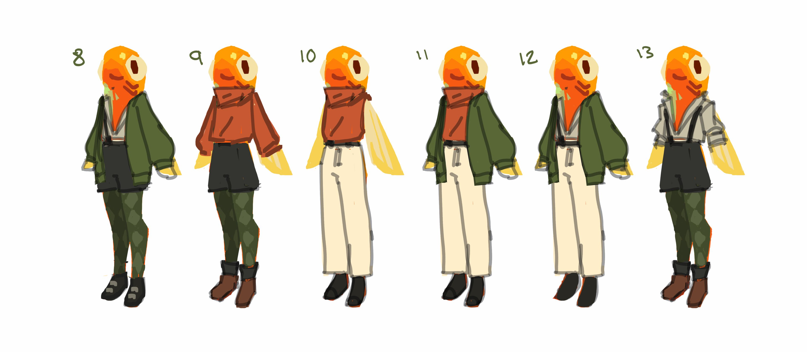
With all my outfits confirmed, I just had to wait a little longer more for these concepts to be upscaled, polished and then turned into final designs.
So my second character I wanted to be a a blob fish, which revealed hidden scope I hadn't considered. I had asked Alex for one character sprite, but because I wanted pressurised/depressurised versions of this character it ended up being two sprites!
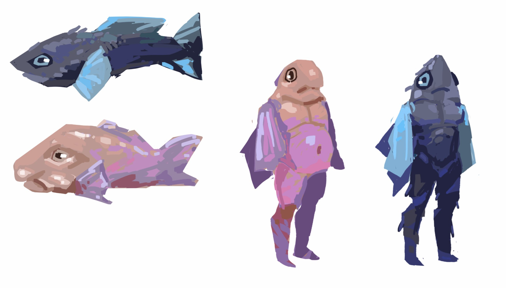
I wanted him to be defined whilst pressurised, and not exactly fat but more a dad bod type shape language to show how fish can often feel "out of water.

Outfit wise I wanted to keep it simple, tank top and shorts, that change their fit with the change of his physique.
I also wanted shorts to show off the colours on his legs - the interesting graphic/watercolour styles are beautiful and I didn't want to lose too many of these super cute details.
I got some more updates for my betta fish character from Alex today, showing how the outfits would look on a more piscine body type:
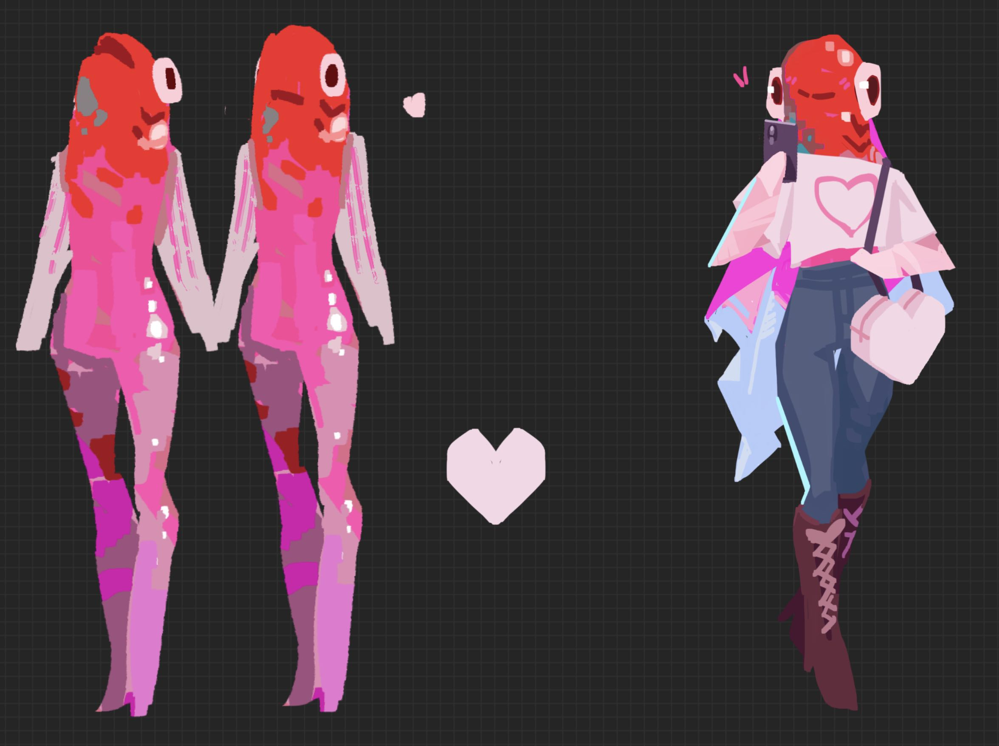
After exploring the previous options 2 and 5, Alex returned with a new wave of outfits to choose from:
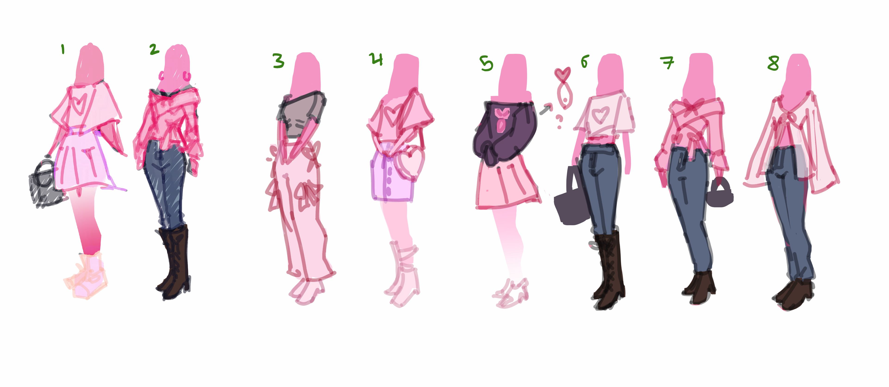
I was trying to whittle it down to a singular favourite, but it was just too darn difficult! I was a bit cheeky, and asked for final versions of 2, 3 and 6:
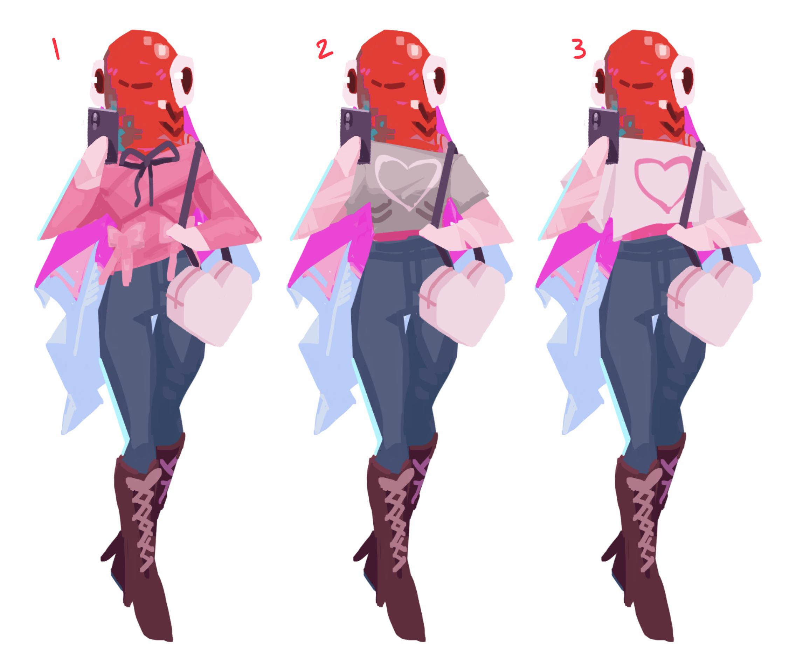
And if anyone is going to have multiple outfits... it HAS to be the fashionista!
Hopefully I'll be getting some concepts for my masculine character tomorrow...
Alex showed me some of her designs based on a betta fish, and gave me 4 options to choose from:

I liked the colours of both the pink and purple betta, but proceeded to choose the pink fish as I felt it better suited the sweet "finfluencer" personality I had thought for this character.
With that in mind, she sent a variety of outfits that were fashionable and influencer coded using the pink colour palette:
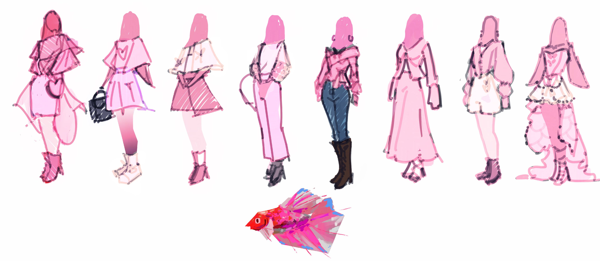
Whilst I had initially decided against having outfits, I think it adds a lot of personality and could segue into other aspects of worldbuilding, such as fashion companies having to expand their clothing lines to be "gill-friendly". I also like the jeans being reminiscent of the blue tips of the original concept's fins.
I've gotten in touch with a musician from my early 20's who is known for percussion, electro swing, and lo-fi beats. I approached him with my vibe and feels for the game I'd like to produce, asking if he would be willing to attempt a soundtrack for this production! He has preliminarily said yes, and I've sent him some details about my game's style and some notes on the tone I'd like him to go for.
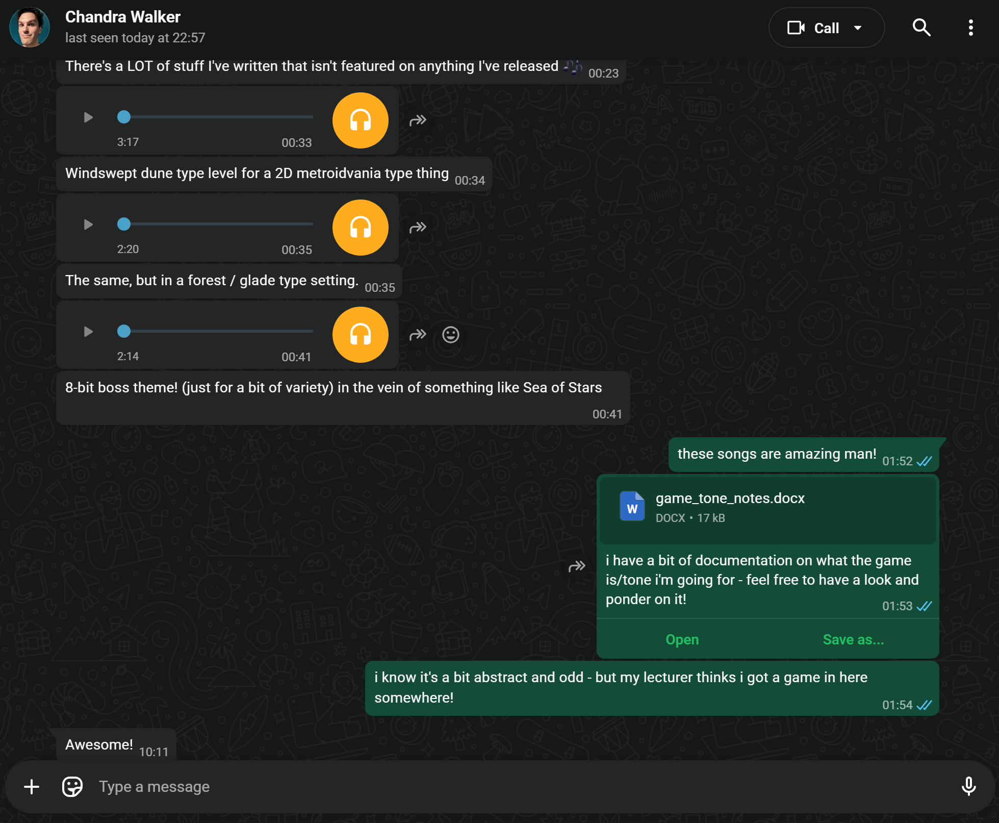
I can't wait to get in touch with him again to see what he feels!!
I have spent some time trying to get a rough structure for my twine prototype in order to present to Sion next month.
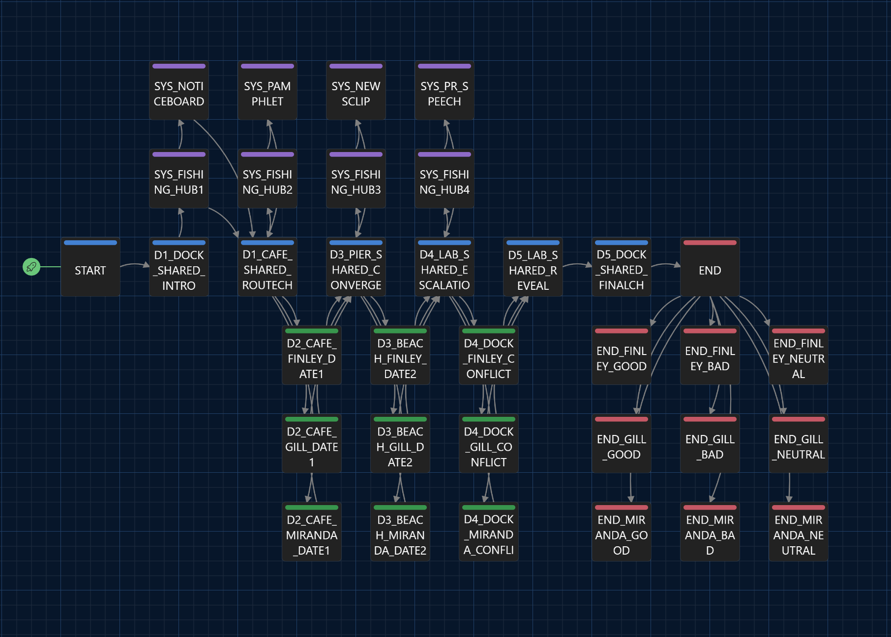
This will be the basis for my vertical slices for dates with all three of my characters!
I have spent some time trying to get a rough structure for my pygame prototype to include in my presentation.
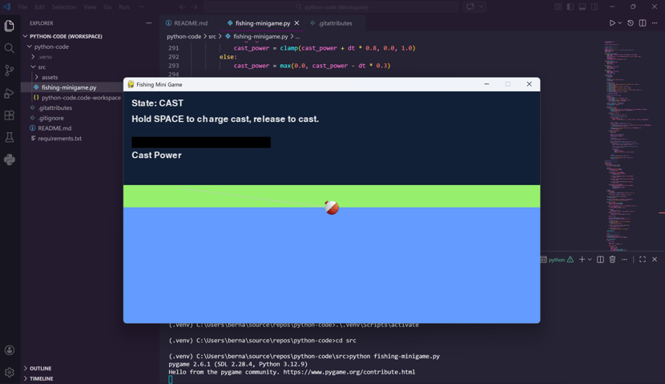
This will be the basis for my simple fishing mechanic that will use environmental storytelling to increase the players pollution awareness stat, completely optional but included for extra easter egg content!
Today I got in touch with Alex, a BCU student on the BA Video Game Digital Art course, in regards to commissioning a set of reverse mermaid character sprites for my visual novel idea.
I proposed 2-3 characters with 5 various expressions in the style of Justin Parpan and with that brief, this is what they conjured up:
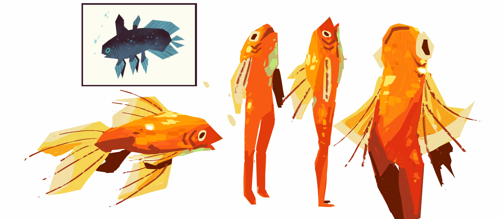
I'm excited to see what other designs they will come up with!
This my my devlog for documenting my process of design in modules 10 and 11 of BA Video Game Design.
I will be posting content about: